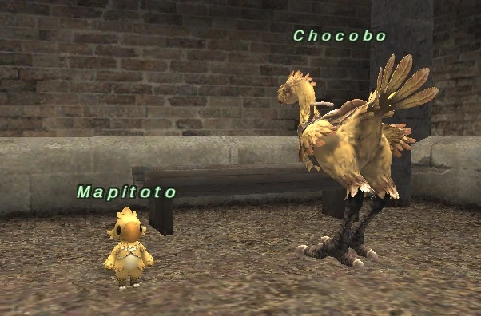

Chocobo travel
For the Chocobo License, speak to Brutus. Rent your chocobo from Mairee or Couvoullie at the stables. Read the rental guide.
A resident of the Upper Jeuno chocobo stables (G-7).

| Name | Mapitoto |
|---|
For the Chocobo License, speak to Brutus. Rent your chocobo from Mairee or Couvoullie at the stables. Read the rental guide.